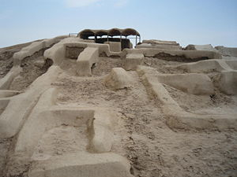

| |
در جریان این حفاری ها ، مشخص شد که با توجه به صنعتی بودن شهر و وجود کارگاه های صنعتی ساخت سفال و جواهرات در این منطقه، ساکنان آن از درختان موجود در طبیعت محوطه برای سوخت استفاده می کرده اند و طبق برخی گفته ها یکی از دلایل نابودی این شهر، قطع بی رویه درختان برای استفاده از آنان در کوره های سفال سازی بوده است . برخی باستان شناسان نیز بر اين باورند كه تغيير مسير رودخانه هيرمند از دلایل از بين رفتن این شهر بوده است .
در شهر سوخته، انواع سفالینه ها و ظروف سنگی، معرق کاری، انواع پارچه و حصیر یافت شده که معرف وجود چندین نوع صنعت، به ویژه صنعت پیشرفته پارچه بافی در این شهر است. تاکنون ۱۲ نوع بافت پارچه یکرنگ و چند رنگ در شهر سوخته به دست آمده است. مشخص شده مردم این شهر با استفاده از نیزارهای باتلاق های اطراف هامون سبد و حصیر می بافتند و از این نی ها برای درست کردن سقف هم استفاده می کردند. کشف قلاب و تور ماهیگیری بیانگر این موضوع است که صید ماهی و بافت تورهای ماهیگیری نیز از دیگر مشاغل مردمان شهر سوخته بوده است .
قبرستان شهر سوخته كه به طور تصادفي در سال 1972 ميلادي توسط باستان شناسان شناسايي شد، در بخش جنوب غربي تپه واقع گردیده است. اين شهر به ظاهر انبار غله حكومتي بوده است و در بيشتر قبرها ظروفي پر از گندم يافت مي شود و همچنين رشته هايي از طلا به قطر دو ميلي متر كه هنوز معلوم نيست با چه وسيله اي تراش خورده اند و با چه وسيله اي سوراخ شده اند كه موي دم اسب به زحمت از آن عبور مي كند. در اين شهر تا به حال ۴۰ هزار قبر كشف شده كه در هر قبر مي شود تكه هايي از اشيا را پيدا كرد كه نشانه شغل فرد است. اين اشيا پارچه و ظروف هستند. يكي از حرف هاي جالبي كه راجع به اين شهر زده مي شود اين است كه اين شهر همان محل تولد و زندگي رستم بوده است و اين به خاطر بزرگتر بودن جثه اسكلت هاي يافت شده است.از نكات جالب شهر سوخته موقعيت اجتماعي زناني بوده كه تمام مهرهاي انبارداري و ترخيص گندم از قبرهاي زنان خارج شده است و البته بيشترين آسيب هاي ستون فقرات مربوط به زنان بوده كه ناشي از كار سنگين است .
برای نخستین بار در شهر سوخته یک چشم مصنوعی متعلق به 4800 سال پیش کشف شد. این چشم به زنی تنومند 25 تا 30 ساله است که در منطقه گورستان مدفون بود .
تمام سطح منطقه باستانی شهر سوخته پوشیده از قطعات خرد شده سفال است که ظاهرا بیشتر آن را سفال های شکسته شده در فرایند تولید، تشکیل داده است و به نظر می رسد اهالی شهر به منظور سنگ فرش کردن نقاطی از شهر از آن استفاده نموده اند .
اشياي فراوان به دست آمده از شهر سوخته را بيشتر مهره هاي سنگي و پيكره هاي كوچك گلي به شكل حيوانات گوناگون، و ابزارهاي ساخته شده از چوب و فلز تشكيل مي دهند . اشياي زينتي از سنگ لاجورد و فيروزه و عقيق نيز، به مقدار فراوان از شهر سوخته بدست آمده است. از مهمترين كشفيات در اين محل ، يك لوح گلي به خط "ايلامي مقدم" است .
بازگشت
|
|

کشف اولین تصویر متحرک و نیز اولین چشم مصنوعی در شهر سوخته بیانگر تمدن و پیشرفت این شهر باستانی است که در هزاره دوم و سوم قبل از میلاد بنا شده است.
شهر سوخته" در ۵۶ کیلومتری زابل و در حاشیه جاده زابل - زاهدان واقع شده و بنا بر تخمین ها بیش از پنج هزار سال قدمت دارد. این شهر در ۳۲۰۰ سال قبل از میلاد پایه گذاری شده است. این شهر اعجاب انگیز، یکی از شهرهای بسیار پیشرفته در چند هزارسال پیش بوده که توجه بسیاری از باستان شناسان جهان را به خود جلب کرده است .
وسعت "شهر سوخته" و یافته های کاوشگران این محوطه باستانی را از صورت یک محوطه عادی دوران مفرغ خارج کرده و به این نتیجه رسانده که زندگی در"شهر سوخته" با دوران آغاز شهرنشینی در فلات مرکزی ایران و بین النهرین همزمان است. سند یا کتیبه ای که نام واقعی و قدیمی این شهر را مشخص کند هنوز به دست نیامده و از آنجايي كه اين شهر دسته كم طي سه مرحله از تاريخ خود دچار حريق و آتشسوزي بزرگي شده و آثار خاكستر و سوختگي در جاي جاي آن ديده ميشود، از سوي مردم محل با نام "شهر سوخته" خوانده شده است. روايت محلي ديگر درباره نام شهر آن است كه نام اين محل در اصل شهر "سوته" بوده كه به معناي بزرگ و عظيم است و سوته به مرور زمان تبديل به سوخته شده است .
" کلنل بیت"، یکی از ماموران نظامی بریتانیا از نخستین کسانی است که در دوره قاجار و پس از بازدید از سیستان به این محوطه اشاره کرده و نخستین کسی است که در خاطراتش این محوطه را شهر سوخته نامیده و آثار باقیمانده از آتش سوزی را دیده است . بر مبنای یافته های باستان شناسان شهر سوخته ۱۵۱ هکتار وسعت دارد و بقایای آن نشان می دهد که این شهر دارای پنج بخش مسکونی واقع در شمال شرقی شهر سوخته، بخش های مرکزی، منطقه صنعتی، بناهای یادمانی و گورستان است که به صورت تپه های متوالی و چسبیده به هم واقع شده اند. هشتاد هکتار شهر سوخته بخش مسکونی بوده است .
تحقیقات نشان داده که این محوطه بر خلاف اکنون که محیط زیست کاملاً بیابانی دارد و فقط درختان گز در آنجا دیده میشود، در پنج هزار سال قبل از میلاد منطقه ای سبز و خرم بوده است .
در اولین فصل کاوش در شهر سوخته کوچه ها و خانه های منظم، لوله کشی آب و فاضلاب با لوله های سفالی پیدا شد که نشان دهنده وجود برنامه ریزی شهری در این شهر است .
|
|